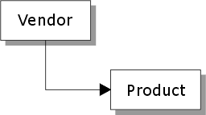
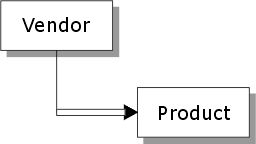

How to Structure Sets
Each set design represents a particular view of the data in your databases. Reversing the database hierarchy can give yo a different perspective on your data.
The hierarchy in which you link databases is determined by what information you need to retrieve from the set. The INVENTORY set structure answer the question, "For a particular product, what is the name and address of the vendor who manufactured the product?" The VENDORS set structure answers the question, "Which product does each vendor manufacture?"
|
INVENTORY |
VENDORS |
|
 |
 |
Note : To create different view of your data, you can use the same database in more than one set, and design set that use the same database more than once.
See Also